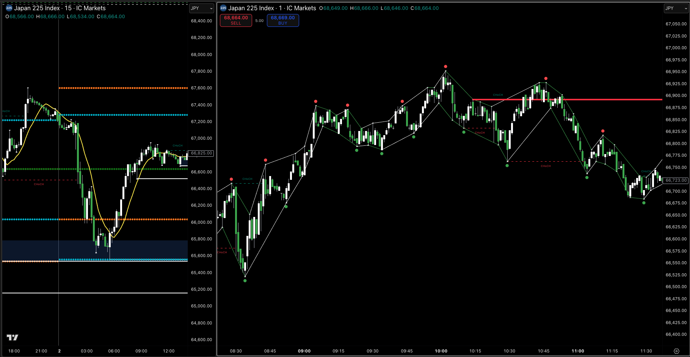
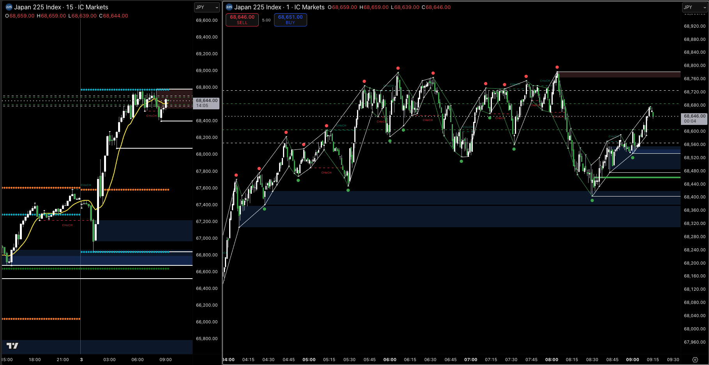
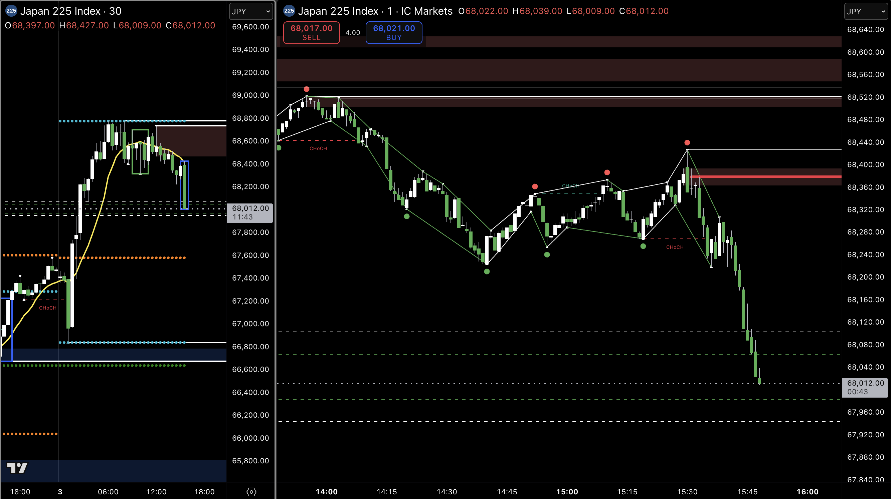

Micro Swing Strategy
Methodology
The price on the 1m chart moves in macro swings which serve 2 purposes: Induction and Sweeping
The PP structure is very clear and consistent on the 1m chart. It seems to really be the way the market makes it's money. It's simple and seems that it can't foundationally be much more complex.
The sweeps are efficient (quick) and rather consistant with the 3 PP PB, which is great.
- Induction - Swings are composed of at least 2 or 3 PP.
- Sweep - PB swings should sweep a number of previous PBPP.
Entry Signals
Trend Filter
- HTF - 20 SMA
- LTF - No SMA used which is highly advantagous as they are only conflicting noise on the 1m chart.
Discoveries
- The JP often does most of it's movement in the Asian session, and is nicely consolidating during London through to NY.
- When the price pulls back and sweeps the recent PP, there is often a cluster of them rather close with the next furthest PP being a good distance away, which it can tend to leave alone?
- The NY session often breaks out of the London session HL, so it may be good to be looking for more trend trades in NY and range trades (at top or bottom) during London.
Considerations
- You have a mastered methodology about the induction sweep on the 1m. Think on what the 5 and 15m HTF methodology would look like, and hour is probably too much.
- It seems like the 5m and 15 react in the same way. It seems to be a good factor that on those time frames the PP need more efficient sweeping because those traders aren't in it for long.
- The question for sweeps is timing, how long does it take to sweep 15 and 5m. There sould be an standard ideal timing element to that.
Setup Examples
It's common that the JP moves strongly to a new level in the Asian session and consolidates during London, which presents good micro swing trade opportunities.
The trade was structurally sound for a reversal trade, after a CHoCH move. A good RR placement above the previous high PP and the TP was at the previous low PP.


The price had moved strongly to the bottom of the range, swept the last 3 hours worth of PP, and was poised to move back up.

3 PP formed in the PB swing, sweeping the recent previous PBPP, in what looks like a downward trend day.
